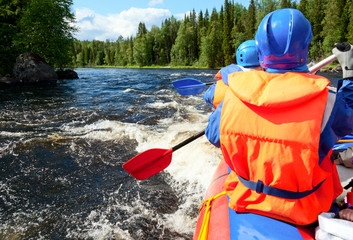
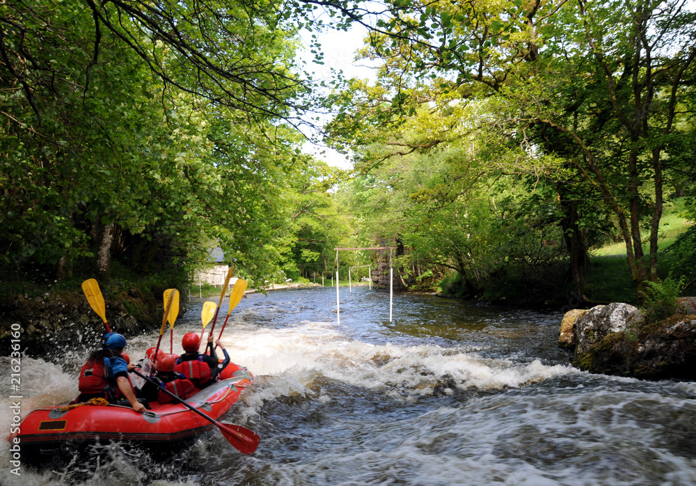

Book Your Adventure Now!
Ready for an adrenaline-filled trip? Contact us to book your rafting experience!
Contact Us2-Day Rafting Tours
Whether on a paddle raft or an inflatable kayak, a two-days rafting trips offer guests the opportunity to explore a region's remote areas. Many first-time paddlers go on one-day rafting adventures, fall in love and then want more! That said, many others come back year after year as a family tradition to our collection of single-day rivers.

Reng site; experience the thrill of conquering the mighty rivers of the Nile on our exhilarating rafting expedition. Navigate through the heart of the Bandingilo forests , where roaring rapids, stunning scenery, and rich cultural experiences await.
 Kwajook Site where you will embark on an unforgettable journey down the roaring rivers of the Nile with our expert guides. This adrenaline-pumping adventure takes you through breathtaking landscapes, including lush rainforests and towering mountains.
Available Trips
| Trip Name | Duration | Difficulty | Highlights | Price |
|---|---|---|---|---|
| Nile River Experience | 5 days | Intermediate | Wilderness exploration, wildlife encounters, Class III-IV rapids | $1500 |
| Nile River Explorers | 6 days | Advanced | Grade V rapids, waterfall discovery, wildlife spotting | $2000 |